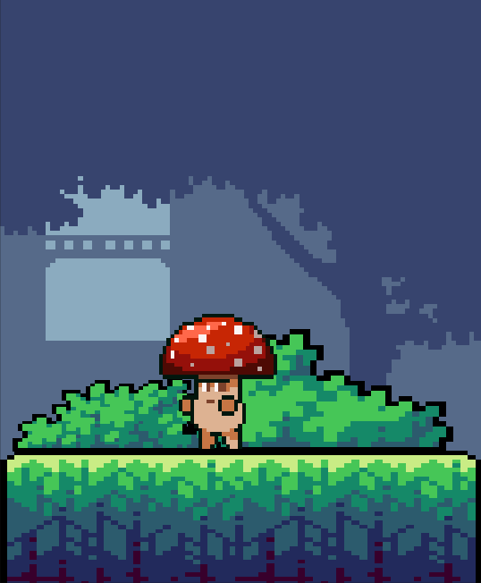
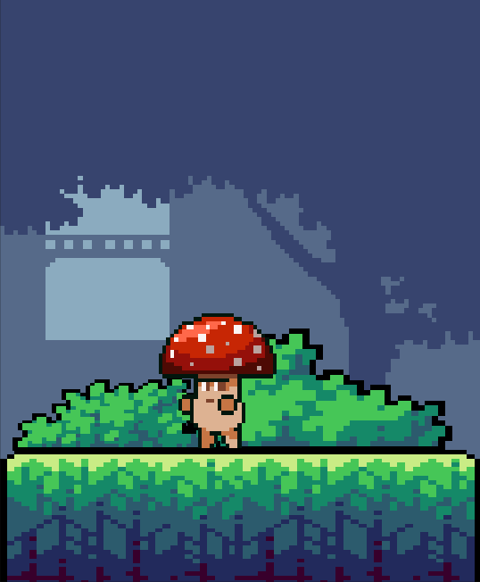

SOBRE O JOGO
Em meio às ruas silenciosas de uma cidade esquecida, onde prédios abandonados foram tomados pela natureza, vive um pequeno slime chamado Slymo. Diferente dos outros slimes, que comem qualquer coisa que encontram, Slymo deseja algo especial: frutas raras e suculentas, que só crescem em lugares profundos da floresta. O problema que impede Slymo de avançar são os cogumelos vivos que moram no lugar e não são amigáveis com visitantes.
Movido pela fome e pela curiosidade, Slymo se lança na aventura. Ele precisa saltar pelos cogumelos e invadir seu território para conquistar o seu desejo. A fome de Slymo pode ter sido o que o levou até ali, mas apenas você pode ajudá-lo a superar os desafios e alcançar seu prêmio final.
 
